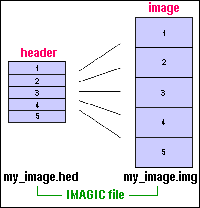
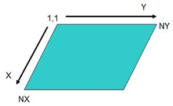
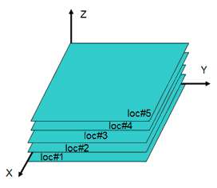
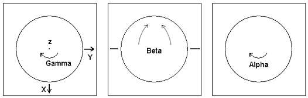

An IMAGIC image actually consists of two files:
Note: One never has to specify the extensions ".hed" or ".img". Within IMAGIC the image name is always the one without extension.
The header file has the extension ".hed" and contains information for each image
The header file contains NBLOCKS (defined in IDAT1(4)) records per image stored. The first header record for each image consists of 256 REAL/float (called DAT1) or INTEGER/int values (called IDAT1). If NBLOCK is > 1 there are additional (NBLOCKS-1) header records (each of length 256 REAL/float), which are used by some IMAGIC commands to store specific data.
The values that must be set are shown with a blue background.
| IDAT1(1) | IMN | Image location number (1,2,3,...) |
| IDAT1(2) | IFOL |
Number of all 1D/2D images/sections following (0,1...). Only of importance in the first location, else set to 0. Note that the value in IFOL + 1 is the total number of 1D/2D images/2D sections in n the file |
| IDAT1(3) | IERROR | Error code for this image during IMAGIC run |
| IDAT1(4) | NBLOCKS |
Number of header blocks (each block containing 256 REAL/INTEGER values). For a usual header: NBLOCKS = 1 |
| IDAT1(5) | NMONTH | Creation month |
| IDAT1(6) | NDAY | Creation day |
| IDAT1(7) | NYEAR | Creation year |
| IDAT1(8) | NHOUR | Creation hour |
| IDAT1(9) | NMINUT | Creation minute |
| IDAT1(10) | NSEC | Creation second |
| IDAT1(11) | RSIZE | Image size in BYTES as seen from the program |
| IDAT1(12) | IZOLD | Top left Z coordinate before THREED-CUT |
| IDAT1(13) | IXLP | Number of lines per image (for 1D data IXLP=1) |
| IDAT1(14) | IYLP | Number of pixels per line |
| IDAT1(15) | TYPE |
4 coded characters determining the image type: REAL : Each image pixel is represented by a 32-bit real/float number LONG : Each image pixel is represented by a 32-bit (signed) integer number INTG : Each image pixel is represented by a 16-bit (signed) integer number PACK : Each image pixel is represented by one (unsigned) byte number COMP : Each complex image pixel is represented by two REAL values |
| IDAT1(16) | IXOLD | Top left X coordinate before CUT-IMAGE |
| IDAT1(17) | IYOLD | Top left Y coordinate before CUT-IMAGE |
| DAT1(18) | AVDENS | Average density in image |
| DAT1(19) | SIGMA | Sigma of image densities |
| DAT1(20) | USER1 | At user's own disposal |
| DAT1(21) | USER2 | At user's own disposal |
| DAT1(22) | DENSMAX | Highest density in image |
| DAT1(23) | DENSMIN | Minimal density in image |
| IDAT1(24) | COMPLEX | Label indicating that data is always complex |
| DAT1(25) | DEFOCUS1 | Defocus value 1 (Angstrom) |
| DAT1(26) | DEFOCUS2 | Defocus value 2 (Angstrom) |
| DAT1(27) | DEFANGLE | Defocus angle (degree) |
| DAT1(28) |
SINOSTRT WAVEMAX |
Start angle if image is a sinogram Maximal wave number if image is a spectra |
| DAT1(29) |
SINOEND WAVESTEP |
End angle if image is a sinogram Step size of wave numbers if image is a spectra |
|
IDAT1(30) - IDAT1(49) |
NAME | Coded NAME/TITLE of the image (80 characters) |
| DAT1(50) | CCC3D | 3D simularity criteria |
| IDAT1(51) | REF3D | 3D membership |
| IDAT1(52) | MIDENT | Micrograph identification number |
| DAT1(53) | EZSHIFT | Equivalent shift in Z direction |
| DAT1(54) | EALPHA | Equivalent Euler angle alpha (degree) |
| DAT1(55) | EBETA | Equivalent Euler angle beta (degree) |
| DAT1(56) | EGAMMA | Equivalent Euler angle gamma (degree) |
| IDAT1(57) | REF3DOLD |
Old 3D membership before last ANG-RECONST/ANCHORSET (EACH_TO_BEST) |
| IDAT1(58) | ACTIVE |
Image is active or not (EXLUSIVE-COPY and HEADERS): ACTIVE > 0 : image is set active ACTIVE < 0 : image is set inactive ACTIVE = 0 : not set (treated as being set active) |
| IDAT1(59) | NALISUM |
Number of images summed (used in SUM-ALIGNED-IMAGES) |
| IDAT1(60) | PGROUP |
Point-group symmetry in international notation (622, for example) |
| IDAT1(61) | IZLP |
Number of 2D planes in 3D data (for 1D/2D: IZLP1=1) |
| IDAT1(62) | I4LP |
Number of "objects" in file: 1D (IXLP=1): number of 1D spectra 2D (IZLP=1): number of 2D images 3D (IZLP>1): number of 3D volumes |
| IDAT1(63) | I5LP | |
| IDAT1(64) | I6LP | |
| DAT1(65) | ALPHA | Euler angle alpha (3D and angular reconstitution) (degree) |
| DAT1(66) | BETA | Euler angle beta (3D and angular reconstitution) (degree) |
| DAT1(67) | GAMMA | Euler angle gamma (3D and angular reconstitution) (degree) |
| IDAT1(68) | IMAVERS | IMAGIC version, which created the file (yyyymmdd) |
| IDAT1(69) | REALTYPE |
Floating point type / machine stamp: 16777216: VAX/VMS 33686018: Linux, Unix, Mac OSX, MS Windows, OSF, ULTRIX 67372036: SiliconGraphics, SUN, HP, IBM |
| IDAT1(70) | LOCMICRO | Location of the picked particle in the original micrograph |
| IDAT1(71) | IXMICRO | Central X coordinate of the picked particle in the original micrograph |
| IDAT1(72) | IYMICRO | Central Y coordinate of the picked particle in the original micrograph |
| IDAT1(73) | LOCORIG |
Location of the picked particle in the "original" file (usually the file created by PICK-PARTICLE or CUT-IMAGE/APERIODIC) |
| IDAT1(74) | NUMFRAME |
If file contains a movie or the like: number of frames in each movie If file does not contain a movie or the like: 0 |
| IDAT1(75) | PUPSIZE | Typical upper size of particle(s) in the image (in pixels) |
| IDAT1(76) | PLOWSIZE | Typical lower size of particle(s) in the image (in pixels) |
| IDAT1(77) | PICKEDGX | Minimal X distance from edge (PICK-PARTICLES) |
| IDAT1(78) | PICKEDGY | Minimal Y distance from edge (PICK-PARTICLES) |
|
IDAT1(79) - IDAT1(93) |
BUFFCTRL | Old I/O parameters, which are no more used |
| IDAT1(94) | READIM |
I/O parameter during IMAGIC run: Image is read in from file or not (No meaning in a closed file) |
| IDAT1(95) | WRITIM |
I/O buffering parameter during IMAGIC run: Image is dumped to file or not (No meaning in a closed file) |
| IDAT1(96) | NUM |
I/O parameter during IMAGIC run: file number of image file (No meaning in a closed file) |
| IDAT1(97) | NUMHEAD |
I/O parameter during IMAGIC run: file number of header file (No meaning in a closed file) |
| IDAT1(98) | LBUF |
I/O parameter during IMAGIC run: old READIM/WRITIM parameter 0: buffer whole image -1: read/write line by line (No meaning in a closed file) |
| IDAT1(99) | READONLY |
I/O parameter during IMAGIC run: open file action mode 1: open read only 0: open read/write (No meaning in a closed file) |
| DAT1(100) | ANGLE | Last rotation angle (degree) |
| DAT1(101) | VOLTAGE | Acceleration voltage (Volt) |
| DAT1(102) | SPABERR | Spherical aberration (mm) |
| DAT1(103) | FOCDIST | Focal distance of objective (mm) |
| DAT1(104) | CCC | Cross correlation peak height |
| DAT1(105) | ERRAR |
Error in angular reconstitution if -1.0: the file is a special file (FABOSA) |
| DAT1(106) | ERR3D | Error in 3D reconstruction |
| IDAT1(107) | REF | (Multi-) reference number |
| DAT1(108) | CLASSNO | Class number in MSA classification |
| DAT1(109) | LOCOLD | Location number before CUT-IMAGE or before copying the output images in ANG-REC/NEW |
| DAT1(110) | REPQUAL |
Representation quality Used in MSA-RUN and MSA (eigen) filtering |
| DAT1(111) | ZSHIFT | Last shift in Z direction |
| DAT1(112) | XSHIFT | Last shift in X direction |
| DAT1(113) | YSHIFT | Last shift in Y direction |
| DAT1(114) | NUMCLS | Number of members in the class specified in CLASSNO, if this image represents a class average (class-sum image) |
| DAT1(115) | OVQUAL | Overall quality of the class in CLASSNO |
| DAT1(116) | EANGLE | Equivalent angle (degree) |
| DAT1(117) | EXSHIFT | Equivalent shift in X direction |
| DAT1(118) | EYSHIFT | Equivalent shift in Y direction |
| DAT1(119) | CMTOTVAR | Total variance in data matrix relative to centre of mass (MSA calculations) |
| DAT1(120) | INFORMAT | Gauss norm / real*FT space information of the data set |
| IDAT1(121) | NUMEIGEN | Number of eigenvalues/eigenimages in MSA |
| IDAT1(122) | NIACTIVE | Number of active images in MSA calculations |
| DAT1(123) | PIXSIZE |
Pixel/Voxel size (Angstrom) If DAT1(105) = -1.0 (FABOSA): mm per pixel |
| DAT1(124) | APERTURE | Aperture in the back focal plane of the objective lens (in micrometer) |
| DAT1(125) | CTFQUAL | CTF quality |
| DAT1(126) | ALPHA2 | Euler angle alpha (from projection matching) (degree) |
| DAT1(127) | BETA2 | Euler angle beta (from projection matching) (degree) |
| DAT1(128) | GAMMA2 | Euler angle gamma (from projection matching) (degree) |
|
DAT1(126) - DAT1(128) |
Specific FABOSA variables if DAT1(105) = -1.0 | |
| DAT1(129) | NMETRIC | Metric used in MSA calculations |
| DAT1(130) | ACTMSA | A flag indicating whether the "image" is/was active or not during MSA calculations |
|
DAT1(131) - DAT1(199) |
COOSMSA |
MSA coordinates of the "image" along factorial axes (1 through 69). If more than 69 eigenimages were used all MSA coordinates are stored in an additional header block |
| DAT1(150) | EIGVAL | Eigenvalue if the "image" represents an eigenimage |
|
IDAT1(200) - IDAT1(256) |
HISTORY |
Coded history of image (228 characters)
|
The image density file has the extension ".img" and contains the image densities. This file contains only the raw data.
The raw sata can be stored in the following internal IMAGIC formats (see header index DAT1(15) - TYPE):
REAL : Each image pixel is represented by a 32-bit real/float number
LONG : Each image pixel is represented by a 32-bit (signed) integer number
INTG : Each image pixel is represented by a 16-bit (signed) integer number
PACK : Each image pixel is represented by one (unsigned) byte number
COMP : Each complex image pixel is represented by 2 REAL values
The first pixel stored is the upper left one. The data is stored line by line, section by section, volume by volume. Please also refer to the definition of the IMAGIC coordinate system.
The IMAGIC coordinate system is defined as follows:
The IMAGIC coordinate system is a right-handed system with its (1,1) origin
in the top-left corner of the image. The length of the lines is NY and the
number of lines is NX:

The centre of the image, for almost all operations on the image, is given by:
( IXMID , IYMID ) = ( NX/2 + 1 , NY/2 + 1 ).
This point is also the default centre of rotational symmetric masks and the
like.
In three dimensions:

In IMAGIC the Euler angles alpha, beta, gamma are defined as three subsequent rotations. The first rotation angle ALPHA describes a rotation around the Z-axis. We then rotate along the new Y-axis over the angle BETA. Finally, the rotation GAMMY is a rotation around the new Z-axis. All rotations are counter clockwise.
Note that these are Euler angles as seen from the object.
Normally a user does not think in this way but tries to imagine how the
particle would look like "in his hands":

a) look at the particle along the Z-axis ("north pole")
b) rotate the particle clockwise by GAMMA
c) rotate the particle into the plane clockwise by BETA
d) rotate the particle clockwise by ALPHA
PLEASE NOTE:
The important angles to define a 3-D orientation are gamma and beta. Alpha is
only the final in-plane rotation.